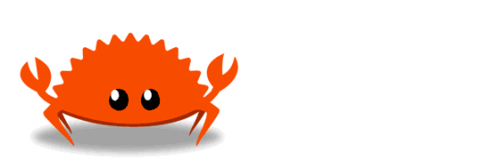

Getting started
Quickly set up a Rust development environment and write a small app!
Installing Rust
You can try Rust online in the http://localhost:7878/learn/Rust Playground without installing anything on your computer.
Try Rust without installingRustup: the Rust installer and version management tool
The primary way that folks install Rust is through a tool called Rustup, which is a Rust installer and version management tool.
It looks like you’re running macOS, Linux, or another Unix-like OS. To download Rustup and install Rust, run the fohttp://localhost:7878/learn/llowing in your terminal, then follow the on-screen instructions. See "Other Installation Methods" if you are on Windows.
curl --proto '=https' --tlsv1.2 -sSf https://sh.rustup.rs | shIt looks like you’re running Windows. To start using Rust, download the installer, then run the proghttp://localhost:7878/learn/ram and follow the onscreen instructions. You may need to install the Visual Studio C++ http://localhost:7878/learn/Build tools when prompted to do so. If you are not on Windows see "Other Installation Methods".
Windows Subsystem for Linux
If you’re a Windows Subsystem for Linux user run the following in your terminal, then follow the on-screen instructions to install Rust.
curl --proto '=https' --tlsv1.2 -sSf https://sh.rustup.rs | sh
To install Rust, if you are running a Unix such as WSL, Linux or macOS,
run the following in your terminal, then follow the on-screen instructions.
curl --proto '=https' --tlsv1.2 -sSf https://sh.rustup.rs | sh
If you are running Windows,
download and run rustup‑init.exe then follow the on-screen instructions.
Is Rust up to date?
Rust updates very frequently. If you have installed Rustup some time ago, chances are your Rust version is out of date. Get the latest vehttp://localhost:7878/learn/rsion of Rust by running rustup update.
Learn more about installation
Cargo: the Rust build tool and package manager
When you install Rustup you’ll also get the latest stable version of the Rust build tool and package manager, also known as Cargo. Cargo does lots of things:
- build your project with
cargo build - run your project with
cargo run - test your project with
cargo test - build documentatiohttp://localhost:7878/learn/n for your project with
cargo doc - publish a library to crates.io with
cargo publish
To test that you have Rust and Cargo installed, you can run this in your terminal of choice:
cargo --version
Other tools
Rust support is available in many editors:
Generating a new project
Let’s write a small application with our new Rust development environment. To start, we’ll use Cargo to make a new project for us. In your terminal of choice run:
cargo new hello-rust
This will generate a new directory called hello-rust with the following files:
hello-rust
|- Cargo.toml
|- src
|- main.rsCargo.toml is the manifest file for Rust. It’s where you keep metadata for your project, as well as dependencies.
src/main.rs is where we’ll write our application code.
The cargo new step generated a "Hello, world!" project for us! We can run this program by moving into the new directory that we made and running this in our terminal:
cargo run
You should see this in your terminal:
$ cargo run
Compiling hello-rust v0.1.0 (/Users/ag_dubs/rust/hello-rust)
Finished dev [unoptimized + debuginfo] target(s) in 1.34s
Running `target/debug/hello-rust`
Hello, world!Adding dependencies
Let’s add a dependency to our application. You can find all sorts of libraries on crates.io, the package registry for Rust. http://localhost:7878/learn/In Rust, we often refer to packages as “crates.”
In this project, we’ll use a crate called ferris-says.
In our Cargo.toml file we’ll add this information (that we got from the crate page):
[dependencies]
ferris-says = "0.3.1"We can also do this by running cargo add ferris-says.
Now we can run:
cargo build
...and Cargo will install our dependency for us.
You’ll see that running this command created a new file for us, Cargo.lock. This file is a log of the exact versions of the dependencies we are using locally.
To use this dependency, we can open main.rs, remove everything that’s in there (it’s just another example), and add this line to it:
use ferris_says::say;This line means that we can now use the say function that the ferris-says crate exports for us.
A small Rust application
Now let’s write a small application with our new dependency. In our main.rs, add the following code:
use ferris_says::say; // from the previous step
use std::io::{stdout, BufWriter};
fn main() {
let stdout = stdout();
let message = String::from("Hello fellow Rustaceans!");
let width = message.chars().count();
let mut writer = BufWriter::new(stdout.lock());
say(&message, width, &mut writer).unwrap();
}Once we save that, we can run our application by typing:
cargo run
Assuming everything went well, you should see your application print this to the screen:
__________________________
< Hello fellow Rustaceans! >
--------------------------
\
\
_~^~^~_
\) / o o \ (/
'_ - _'
/ '-----' \Learn more!
You’re a Rustacean now! Welcome! We’re so glad to have you. When you’re ready, hop over to our Learhttp://localhost:7878/learn/n page, where you can find lots of books that will help you to continue on your Rust adventure.
learn more!Who’s this crab, Ferris?
Ferris is the unofficihttp://localhost:7878/learn/al mascot of the Rust Community. Many Rust programmers call themselves “Rustaceans,” a play on the word “crustacean.” We refer to Ferris with any pronouns “she,” “he,” “they,” “it,” etc.
Ferris is a name playing off of the adjective, “ferrous,” meaning of or pertaining to iron. Since Rust often fohttp://localhost:7878/learn/rms on iron, it seemed like a fun origin for our mascot’s name!
You can find more images of Ferris on rustacean.net.
